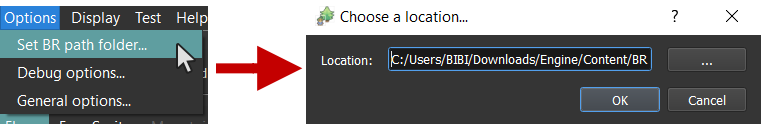

Manage your resources
When you are editing your maps, you are using textures that are proposed by default. You also have, music, interfaces, etc. All this stuff is called BR (Basic Resources). It's located to the install folder. You can find the folder location here:

Manage pictures
Open the pictures manager by clicking here on the main toolbar:

On the left, you have a tree containing all the pictures kind available in your project:
Bars: All the graphic bars for specific statistics.Faceset: All the face images used in battles when targeting a character.Icons: All the icons used in the game.WindowSkins: All the information used for windows, arrows, texts, etc.TitleScreen: All the graphics for title screen.Autotiles: All the autotiles textures.Battlers: All the battlers used for battles corresponding to different sprites states.Character: All the character sprites with walk animations.Reliefs: Not available yet.Tilesets: All the tilesets used for map textures.Walls: All the walls textures.
The second list corresponds to all the pictures that you are using in your game (according to the kind of pictures you selected). Each picture has an ID and a name. This system is in place in order to:
- Avoid having useless textures to be loaded
- Being able to change the names of your ressources without problem
If you check the option Show available content of ..., this will show the available pictures that are located in the Basic Resources folder.
Add / Remove pictures
To add pictures in your game list: select a picture in the available content list, and press on the left arrow button below (or double click). To remove a picture in your game list, select one of your used picture and press Del on you keyboard.
Use my custom pictures
Click on the + button and select one or several pictures. This will add your custom pictures in the available content list. Not that you can distinguish BR and non BR pictures thanks to the bullets colors:
Custom
 BR
BR
If you added your pictures manually inside the project folder, you will need to use the Refresh button in order to see your changes in the list.
Now add your pictures to your game project the same way you did for BR pictures!
Manage songs
Songs are also a resource proposed in the BR. Open the songs manager by clicking here on the main toolbar:

You can manage your songs exactly like pictures. You can also test music options on the right:
Volume: The song volume (in %).Start: The beginning time of the song in seconds.End: The end time of the song in seconds.
Also note that there are four sorts of songs:
Music: Music that are looping (used for maps themes, battle musics, etc.).Background sounds: Sounds that are looping on top of the current played music (used for rain, wind, etc.).Sounds: Sound played one (used for cursor, attacks sounds, etc.).Music effects: Short music stopping the currently played music. After the end of this music, the previously played music goes back (used for object found music, level up music, etc.).